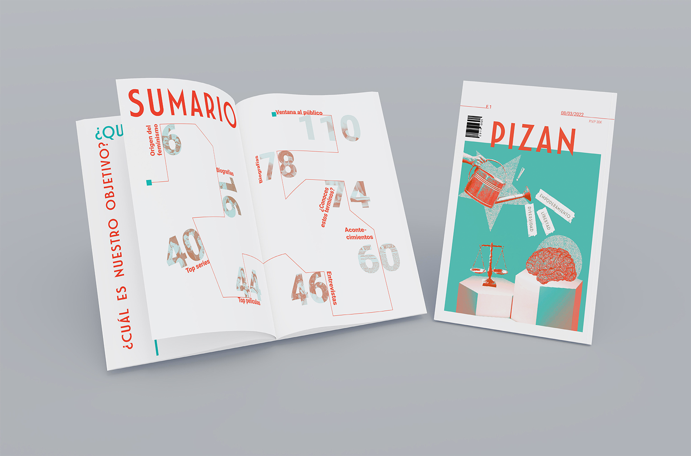

Diseño de editorial
Pizan
Pizan es una revista enfocada a dar visibilidad al feminismo realizada para la asignatura de Editorial. En primer lugar se habla de el origen del feminismo, despúes se realiza un recorrido por las vidas de mujeres que han marcado la historia pero cuyos exitos fueron opacados por la sociedades de la época. Contiene una selección de películas y series que transmiten el espiritu reivindicativo del feminismo.
